── Attaching core tidyverse packages ──────────────────────── tidyverse 2.0.0 ──
✔ dplyr 1.1.4 ✔ readr 2.1.5
✔ forcats 1.0.0 ✔ stringr 1.5.1
✔ ggplot2 4.0.1 ✔ tibble 3.3.0
✔ lubridate 1.9.4 ✔ tidyr 1.3.1
✔ purrr 1.0.4
── Conflicts ────────────────────────────────────────── tidyverse_conflicts() ──
✖ dplyr::filter() masks stats::filter()
✖ dplyr::lag() masks stats::lag()
ℹ Use the conflicted package (<http://conflicted.r-lib.org/>) to force all conflicts to become errors
Attaching package: 'janitor'
The following objects are masked from 'package:stats':
chisq.test, fisher.test
Attaching package: 'hms'
The following object is masked from 'package:lubridate':
hmsSurry Home Educators XC: Fall 2025
Introduction
Purpose
The purpose of this analysis is to provide a summary of the Surry Runnin’ Patriots Homeschool Cross Country Team’s 2025 season. Visualizations and summary statistics are provided for each team (high school boys, high school girls, middle school boys, and middle school girls).
Data
The season data is taken from nc.milesplit.com. Links to all of the team’s meets with results are available on the team page: Surry Home Educators’ Team Page. Under schedule, select “Cross Country” and “2025 - 2026.” Race times for each meet were copied from team results pages within each meet page and pasted into a Google sheets file for pre-processing, before being downloaded and imported into RStudio. Pre-processing steps are recorded on the final sheet in the google sheets document, after the sets of raw and formatted data for each meet, entitled “Data Log.” The Google sheets file is available here: Surry XC 2025. The following columns are used in this analysis: time_h_mm_ss (race time in minutes and seconds), distance (race distance), first_name (runner’s first name), place (runner’s placement in the race results), division (middle school or high school), sex, and short_race_name (abbreviated name of meet).
Preliminary Tasks
Load R packages, read in data, combine data files into one data set, and select variables of interest.
Load R packages:
Read in data:
race1_data <- read_csv("Surry XC 2025 - 1 Formatted.csv")Rows: 19 Columns: 14
── Column specification ────────────────────────────────────────────────────────
Delimiter: ","
chr (8): Distance, First Name, Last Name, Division, Sex, Race Name, Short R...
dbl (2): Place, Race No.
lgl (1): Percentile Ranking
time (3): Raw Time, Time (h:mm:ss), Pace (h:mm:ss per mile)
ℹ Use `spec()` to retrieve the full column specification for this data.
ℹ Specify the column types or set `show_col_types = FALSE` to quiet this message.race2_data <- read_csv("Surry XC 2025 - 2 Formatted.csv")Rows: 21 Columns: 14
── Column specification ────────────────────────────────────────────────────────
Delimiter: ","
chr (9): Distance, First Name, Last Name, Percentile Ranking, Division, Sex...
dbl (2): Place, Race No.
time (3): Raw Time, Time (h:mm:ss), Pace (h:mm:ss per mile)
ℹ Use `spec()` to retrieve the full column specification for this data.
ℹ Specify the column types or set `show_col_types = FALSE` to quiet this message.race3_data <- read_csv("Surry XC 2025 - 3 Formatted.csv")Rows: 21 Columns: 14
── Column specification ────────────────────────────────────────────────────────
Delimiter: ","
chr (9): Distance, First Name, Last Name, Percentile Ranking, Division, Sex...
dbl (2): Place, Race No.
time (3): Raw Time, Time (h:mm:ss), Pace (h:mm:ss per mile)
ℹ Use `spec()` to retrieve the full column specification for this data.
ℹ Specify the column types or set `show_col_types = FALSE` to quiet this message.race4_data <- read_csv("Surry XC 2025 - 4 Formatted.csv")Rows: 18 Columns: 14
── Column specification ────────────────────────────────────────────────────────
Delimiter: ","
chr (9): Distance, First Name, Last Name, Percentile Ranking, Division, Sex...
dbl (2): Place, Race No.
time (3): Raw Time, Time (h:mm:ss), Pace (h:mm:ss per mile)
ℹ Use `spec()` to retrieve the full column specification for this data.
ℹ Specify the column types or set `show_col_types = FALSE` to quiet this message.race5_data <- read_csv("Surry XC 2025 - 5 Formatted.csv")Rows: 17 Columns: 14
── Column specification ────────────────────────────────────────────────────────
Delimiter: ","
chr (9): Distance, First Name, Last Name, Percentile Ranking, Division, Sex...
dbl (2): Place, Race No.
time (3): Raw Time, Time (h:mm:ss), Pace (h:mm:ss per mile)
ℹ Use `spec()` to retrieve the full column specification for this data.
ℹ Specify the column types or set `show_col_types = FALSE` to quiet this message.race6_data <- read_csv("Surry XC 2025 - 6 Formatted.csv")Rows: 20 Columns: 14
── Column specification ────────────────────────────────────────────────────────
Delimiter: ","
chr (9): Distance, First Name, Last Name, Percentile Ranking, Division, Sex...
dbl (2): Place, Race No.
time (3): Raw Time, Time (h:mm:ss), Pace (h:mm:ss per mile)
ℹ Use `spec()` to retrieve the full column specification for this data.
ℹ Specify the column types or set `show_col_types = FALSE` to quiet this message.race7_data <- read_csv("Surry XC 2025 - 7 Formatted.csv")Rows: 17 Columns: 14
── Column specification ────────────────────────────────────────────────────────
Delimiter: ","
chr (9): Distance, First Name, Last Name, Percentile Ranking, Division, Sex...
dbl (2): Place, Race No.
time (3): Raw Time, Time (h:mm:ss), Pace (h:mm:ss per mile)
ℹ Use `spec()` to retrieve the full column specification for this data.
ℹ Specify the column types or set `show_col_types = FALSE` to quiet this message.race8_data <- read_csv("Surry XC 2025 - 8 Formatted.csv")Rows: 18 Columns: 14
── Column specification ────────────────────────────────────────────────────────
Delimiter: ","
chr (9): Distance, First Name, Last Name, Percentile Ranking, Division, Sex...
dbl (2): Place, Race No.
time (3): Raw Time, Time (h:mm:ss), Pace (h:mm:ss per mile)
ℹ Use `spec()` to retrieve the full column specification for this data.
ℹ Specify the column types or set `show_col_types = FALSE` to quiet this message.race9_data <- read_csv("Surry XC 2025 - 9 Formatted.csv")Rows: 16 Columns: 14
── Column specification ────────────────────────────────────────────────────────
Delimiter: ","
chr (9): Distance, First Name, Last Name, Percentile Ranking, Division, Sex...
dbl (2): Place, Race No.
time (3): Raw Time, Time (h:mm:ss), Pace (h:mm:ss per mile)
ℹ Use `spec()` to retrieve the full column specification for this data.
ℹ Specify the column types or set `show_col_types = FALSE` to quiet this message.race10_data <- read_csv("Surry XC 2025 - 10 Formatted.csv")Rows: 21 Columns: 14
── Column specification ────────────────────────────────────────────────────────
Delimiter: ","
chr (9): Distance, First Name, Last Name, Percentile Ranking, Division, Sex...
dbl (2): Place, Race No.
time (3): Raw Time, Time (h:mm:ss), Pace (h:mm:ss per mile)
ℹ Use `spec()` to retrieve the full column specification for this data.
ℹ Specify the column types or set `show_col_types = FALSE` to quiet this message.race11_data <- read_csv("Surry XC 2025 - 11 Formatted.csv")Rows: 19 Columns: 14
── Column specification ────────────────────────────────────────────────────────
Delimiter: ","
chr (9): Distance, First Name, Last Name, Percentile Ranking, Division, Sex...
dbl (2): Place, Race No.
time (3): Raw Time, Time (h:mm:ss), Pace (h:mm:ss per mile)
ℹ Use `spec()` to retrieve the full column specification for this data.
ℹ Specify the column types or set `show_col_types = FALSE` to quiet this message.race12_data <- read_csv("Surry XC 2025 - 12 Formatted.csv")Rows: 20 Columns: 14
── Column specification ────────────────────────────────────────────────────────
Delimiter: ","
chr (9): Distance, First Name, Last Name, Percentile Ranking, Division, Sex...
dbl (2): Place, Race No.
time (3): Raw Time, Time (h:mm:ss), Pace (h:mm:ss per mile)
ℹ Use `spec()` to retrieve the full column specification for this data.
ℹ Specify the column types or set `show_col_types = FALSE` to quiet this message.race13_data <- read_csv("Surry XC 2025 - 13 Formatted.csv")Rows: 7 Columns: 14
── Column specification ────────────────────────────────────────────────────────
Delimiter: ","
chr (9): Distance, First Name, Last Name, Percentile Ranking, Division, Sex...
dbl (2): Place, Race No.
time (3): Raw Time, Time (h:mm:ss), Pace (h:mm:ss per mile)
ℹ Use `spec()` to retrieve the full column specification for this data.
ℹ Specify the column types or set `show_col_types = FALSE` to quiet this message.Combine data files into one data set limited to the columns to be used in this analysis, and make the column names R friendly:
race_data <- rbind(race1_data, race2_data, race3_data, race4_data, race5_data,
race6_data, race7_data, race8_data, race9_data, race10_data,
race11_data, race12_data, race13_data) |>
clean_names() |>
select(time_h_mm_ss, distance, first_name, place, division, sex, short_race_name)Data Validation
Check for NA’s, check data types/formats, and check for reasonable values.
Check for NA’s
Count NA’s in the data set:
sum(is.na(race_data))[1] 0There are no NA’s in the data set for this analysis.
Check for Data Formatting
head(race_data)| time_h_mm_ss | distance | first_name | place | division | sex | short_race_name |
|---|---|---|---|---|---|---|
| 00:13:04 | 3K | Lindsay | 1 | High School | Girls | Bob Schilly Inv |
| 00:13:42 | 3K | Ava | 4 | High School | Girls | Bob Schilly Inv |
| 00:14:47 | 3K | Ivory | 10 | High School | Girls | Bob Schilly Inv |
| 00:15:05 | 3K | Caroline | 12 | Middle School | Girls | Bob Schilly Inv |
| 00:15:30 | 3K | Elizabeth | 13 | High School | Girls | Bob Schilly Inv |
| 00:15:49 | 3K | Jada | 14 | Middle School | Girls | Bob Schilly Inv |
Change column data types as appropriate:
race_data$distance <- as.factor(race_data$distance)
race_data$division <- as.factor(race_data$division)
race_data$sex <- as.factor(race_data$sex)
race_data$short_race_name <- factor(race_data$short_race_name, levels = c("Bob Schilly Inv",
"River Run Inv",
"NW Inv",
"Small Team Ch",
"G'boro Glad Inv",
"Fisher R Ch",
"Run4Life",
"Phoenix Inv",
"FHE Meet",
"Surry Inv",
"Hagan Stone Cl",
"NCHE Champ", "Nat'l Champ"))Check for Reasonable Values
summary(race_data) time_h_mm_ss distance first_name place
Min. :00:10:22.000000 2mi: 62 Length:234 Min. : 1.00
1st Qu.:00:20:18.500000 3K : 24 Class :character 1st Qu.: 22.25
Median :00:22:36.000000 4K : 6 Mode :character Median : 43.00
Mean :00:23:31.247863 5K :142 Mean : 58.28
3rd Qu.:00:26:25.000000 3rd Qu.: 84.25
Max. :00:51:21.000000 Max. :297.00
division sex short_race_name
High School :160 Boys :104 River Run Inv : 21
Middle School: 74 Girls:130 NW Inv : 21
Surry Inv : 21
Fisher R Ch : 20
NCHE Champ : 20
Bob Schilly Inv: 19
(Other) :112 Values look good.
High School Boys
Table of Individual 5K Race Times
5K is the standard race length for high school runners, and that race length is the focus of the high school boys’ analysis.
race_data |>
filter(sex == "Boys" & distance == "5K") |>
select(first_name, short_race_name, time_h_mm_ss) |>
pivot_wider(names_from = short_race_name, values_from = time_h_mm_ss)| first_name | River Run Inv | NW Inv | Small Team Ch | G’boro Glad Inv | Fisher R Ch | Run4Life | Phoenix Inv | FHE Meet | Surry Inv | Hagan Stone Cl | NCHE Champ | Nat’l Champ |
|---|---|---|---|---|---|---|---|---|---|---|---|---|
| Machen | 00:20:52 | 00:20:22 | 00:24:00 | 00:19:46 | 00:20:18 | 00:20:10 | 00:19:59 | 00:19:47 | 00:20:45 | 00:19:37 | 00:19:27 | 00:19:46 |
| JD | 00:21:33 | 00:21:46 | 00:22:11 | 00:21:07 | 00:21:29 | 00:21:29 | 00:22:02 | 00:21:47 | 00:20:30 | 00:20:29 | 00:20:36 | 00:20:54 |
| Sam | 00:21:47 | 00:22:09 | 00:21:40 | 00:21:01 | 00:21:30 | 00:21:45 | NA | 00:21:35 | 00:20:07 | 00:20:21 | 00:20:20 | 00:20:02 |
| Riley | 00:22:41 | 00:22:44 | 00:24:01 | 00:22:40 | 00:22:45 | 00:23:09 | 00:23:18 | 00:23:30 | 00:21:32 | 00:22:39 | 00:22:33 | 00:21:08 |
| Dusty | 00:23:06 | 00:23:38 | 00:24:26 | 00:23:07 | 00:23:44 | NA | NA | 00:25:18 | 00:23:02 | 00:23:38 | NA | 00:21:43 |
| Josiah | 00:26:55 | 00:26:06 | 00:27:53 | 00:25:02 | 00:25:32 | 00:21:48 | 00:25:12 | 00:25:19 | 00:23:03 | 00:22:32 | 00:22:49 | 00:22:12 |
| Joshua | NA | 00:26:53 | 00:28:12 | 00:25:53 | 00:28:12 | 00:28:35 | 00:25:00 | 00:27:17 | 00:25:15 | 00:25:53 | 00:24:15 | NA |
| Sumner | NA | 00:36:07 | 00:39:07 | NA | 00:39:26 | 00:37:02 | 00:34:59 | NA | 00:35:28 | 00:38:06 | 00:34:04 | NA |
| Milo | NA | NA | NA | NA | NA | NA | NA | NA | 00:22:15 | NA | NA | NA |
Josiah’s time recorded for the Run4Life Meet is inaccurate. It is the official time recorded, so it is left in for these calculations, except when otherwise noted.
Milo is a middle school boys runner who ran with the high school boys team in the Surry Invitational, so his time for that race is included in the high school boys analysis.
The NA values in this table indicate that the runner did not run in that race.
Graph of Individual 5K Race Times
ggplot(filter(race_data, distance == "5K" &
sex == "Boys"),
aes(x = short_race_name, y = time_h_mm_ss, group = first_name, color = first_name)) +
geom_point() +
geom_line() +
labs(y = "time (hh:mm:ss)",
x = "Meet",
title = "Surry XC Fall 2025: High School Boys' Team",
subtitle = "5K Race Times") +
theme(axis.text.x = element_text(angle = 90, vjust = 0.5, hjust = 1))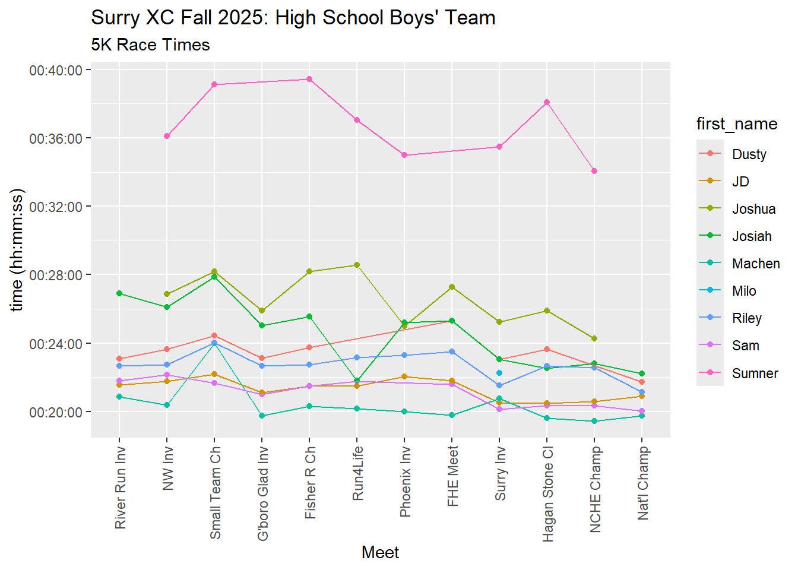
Table of Individual Minimum, Average, and Maximum 5K Times by Runner
race_data |>
filter(division == "High School" & sex == "Boys" & distance == "5K") |>
filter(!(first_name == "Josiah" & short_race_name == "Run4Life")) |> #exclude Josiah's inaccurate time
group_by(first_name) |>
summarize("Fastest_Time" = SecToHms(min(time_h_mm_ss)), "Average_Time" = SecToHms(mean(time_h_mm_ss)),
"Slowest_Time" = SecToHms(max(time_h_mm_ss))) |>
arrange(Average_Time)| first_name | Fastest_Time | Average_Time | Slowest_Time |
|---|---|---|---|
| Machen | 00:19:27 | 00:20:24.08 | 00:24:00 |
| Sam | 00:20:02 | 00:21:07 | 00:22:09 |
| JD | 00:20:29 | 00:21:19.42 | 00:22:11 |
| Riley | 00:21:08 | 00:22:43.33 | 00:24:01 |
| Dusty | 00:21:43 | 00:23:31.33 | 00:25:18 |
| Josiah | 00:22:12 | 00:24:46.82 | 00:27:53 |
| Joshua | 00:24:15 | 00:26:32.50 | 00:28:35 |
| Sumner | 00:34:04 | 00:36:47.38 | 00:39:26 |
Josiah’s inaccurate time for the Run4Life meet is filtered out, to provide a more accurate summary of his running season in this table. Milo’s time for the Surry Inv meet is also left out since it is only one time and doesn’t provide a meaningful range and average.
Boxplot of 5K Race Times by Runner
race_data |>
filter(division == "High School" & sex == "Boys" & distance == "5K") |>
filter(!(first_name == "Josiah" & short_race_name == "Run4Life")) |> #exclude Josiah's inaccurate time
mutate(first_name = factor(first_name, levels = c("Machen", "Sam", "JD", "Riley", "Dusty", "Josiah", "Joshua", "Sumner"))) |>
group_by(first_name) |>
ggplot(aes(x = first_name, y = time_h_mm_ss, fill = first_name)) +
geom_boxplot() +
labs(title = "Surry XC 2025: High School Boys' Team",
subtitle = "5K Races: Boxplot of Season Times by Runner",
x = "Runner", y = "time (hh:mm:ss)") +
stat_summary(fun = "mean", geom = "point", shape = 23, size = 3, fill = "white")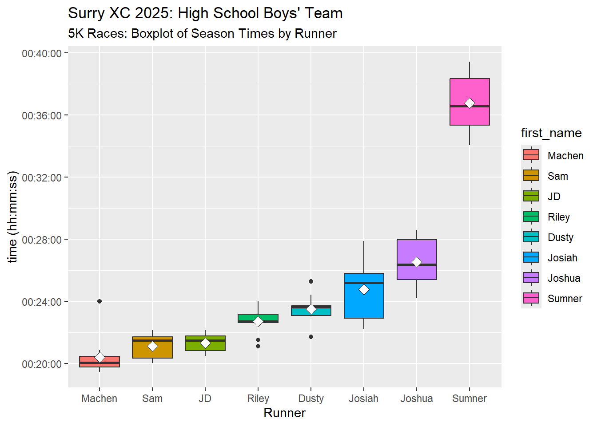
Josiah’s inaccurate time for the Run4Life meet is filtered out, to provide a more accurate summary of his running season in this plot. Milo’s time for the Surry Inv is also left out since it is only one time and doesn’t provide a meaningful range and average for this plot.
Scoring Analysis: Chart of Top Five (Scored) Times for Each 5K Race Each team’s top five times are used to score the teams and determine team placements. This is a table of the top five times for each meet, plus the average of those top five times for each meet.
race_data |>
filter(sex == "Boys" & distance == "5K") |>
filter(short_race_name != "Hagan Stone Cl") |>
mutate(sorter = HmsToSec(time_h_mm_ss)) |>
group_by(short_race_name) |>
arrange(sorter, .by_group = TRUE) |>
slice_head(n=5) |>
mutate(position_in_group = row_number()) |>
select(position_in_group, short_race_name, time_h_mm_ss) |>
pivot_wider(names_from = position_in_group, values_from = time_h_mm_ss) |>
rowwise() |>
mutate(top5_average = SecToHms(mean(c(`1`, `2`, `3`, `4`, `5`))))| short_race_name | 1 | 2 | 3 | 4 | 5 | top5_average |
|---|---|---|---|---|---|---|
| River Run Inv | 00:20:52 | 00:21:33 | 00:21:47 | 00:22:41 | 00:23:06 | 00:21:59.80 |
| NW Inv | 00:20:22 | 00:21:46 | 00:22:09 | 00:22:44 | 00:23:38 | 00:22:07.80 |
| Small Team Ch | 00:21:40 | 00:22:11 | 00:24:00 | 00:24:01 | 00:24:26 | 00:23:15.60 |
| G’boro Glad Inv | 00:19:46 | 00:21:01 | 00:21:07 | 00:22:40 | 00:23:07 | 00:21:32.20 |
| Fisher R Ch | 00:20:18 | 00:21:29 | 00:21:30 | 00:22:45 | 00:23:44 | 00:21:57.20 |
| Run4Life | 00:20:10 | 00:21:29 | 00:21:45 | 00:21:48 | 00:23:09 | 00:21:40.20 |
| Phoenix Inv | 00:19:59 | 00:22:02 | 00:23:18 | 00:25:00 | 00:25:12 | 00:23:06.20 |
| FHE Meet | 00:19:47 | 00:21:35 | 00:21:47 | 00:23:30 | 00:25:18 | 00:22:23.40 |
| Surry Inv | 00:20:07 | 00:20:30 | 00:20:45 | 00:21:32 | 00:22:15 | 00:21:01.80 |
| NCHE Champ | 00:19:27 | 00:20:20 | 00:20:36 | 00:22:33 | 00:22:49 | 00:21:09 |
| Nat’l Champ | 00:19:46 | 00:20:02 | 00:20:54 | 00:21:08 | 00:21:43 | 00:20:42.60 |
The results for the Hagan Stone Classic meet are left out since the runners were split between the Championship and Junior Varsity races. Not enough were in the Championship race for a team score.
The best scored time average for the season was at the National Championship, followed by the Surry Invitational (in which middle school boys runner Milo ran with and had his time scored with the high school team).
Scoring Analysis: Bar Chart of Sum of Top 5 Times for Each Race
race_data |> filter(sex == "Boys" & distance == "5K") |>
filter(short_race_name != "Hagan Stone Cl") |>
mutate(sorter = HmsToSec(time_h_mm_ss)) |>
group_by(short_race_name) |>
arrange(sorter, .by_group = TRUE) |>
slice_head(n=5) |>
mutate(position_in_group = row_number()) |>
ggplot(aes(x = short_race_name, y = time_h_mm_ss, fill = position_in_group)) +
geom_bar(stat = "identity") +
theme(axis.text.x = element_text(angle = 90, vjust = 0.5, hjust = 1)) +
labs(title = "Surry XC Fall 2025: High School Boys",
subtitle = "Scoring Analysis",
y = "Sum of Top Five Team Race Times (hh:mm:ss)",
x = "Meet")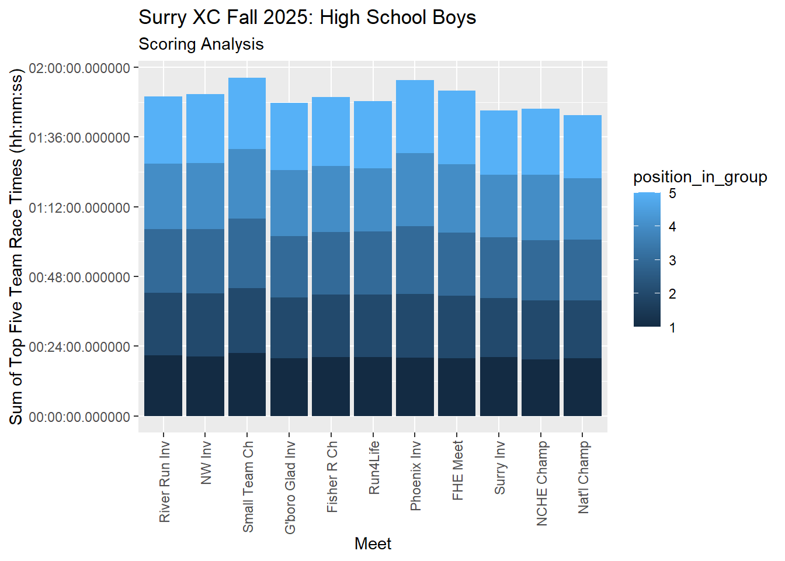
The final three meets show faster summed scoring times than the previous meets. The Hagan Stone Classic meet results were again left out.
Season Highlights: Fastest 5K Times
race_data |>
filter(sex == "Boys" & distance == "5K") |>
arrange(time_h_mm_ss) |>
select(first_name, time_h_mm_ss, short_race_name) |>
head(10)| first_name | time_h_mm_ss | short_race_name |
|---|---|---|
| Machen | 00:19:27 | NCHE Champ |
| Machen | 00:19:37 | Hagan Stone Cl |
| Machen | 00:19:46 | G’boro Glad Inv |
| Machen | 00:19:46 | Nat’l Champ |
| Machen | 00:19:47 | FHE Meet |
| Machen | 00:19:59 | Phoenix Inv |
| Sam | 00:20:02 | Nat’l Champ |
| Sam | 00:20:07 | Surry Inv |
| Machen | 00:20:10 | Run4Life |
| Machen | 00:20:18 | Fisher R Ch |
Season Highlights: Individual Race Finishes in the Top Ten All race lengths are included.
race_data |>
filter(sex == "Boys" & division == "High School" & place <= 10) |>
arrange(place) |>
select(first_name, place, short_race_name)| first_name | place | short_race_name |
|---|---|---|
| Machen | 2 | Bob Schilly Inv |
| Sam | 2 | Small Team Ch |
| JD | 4 | Bob Schilly Inv |
| Machen | 4 | Phoenix Inv |
| Sam | 5 | Surry Inv |
| JD | 6 | Small Team Ch |
| JD | 8 | Surry Inv |
| Riley | 9 | Bob Schilly Inv |
| Machen | 10 | Surry Inv |
Season Highlights: Strong Finishers PR in final race(s) (NCHE or HXN Championships)
race_data |>
filter(sex == "Boys" & division == "High School" & distance == "5K") |>
filter(!(first_name == "Josiah" & short_race_name == "Run4Life")) |> #exclude Josiah's inaccurate time
group_by(first_name) |>
arrange(time_h_mm_ss) |>
slice(1) |>
select(first_name, time_h_mm_ss, short_race_name) |>
filter(short_race_name == "Nat'l Champ" | short_race_name == "NCHE Champ") |>
arrange(time_h_mm_ss)| first_name | time_h_mm_ss | short_race_name |
|---|---|---|
| Machen | 00:19:27 | NCHE Champ |
| Sam | 00:20:02 | Nat’l Champ |
| Riley | 00:21:08 | Nat’l Champ |
| Dusty | 00:21:43 | Nat’l Champ |
| Josiah | 00:22:12 | Nat’l Champ |
| Joshua | 00:24:15 | NCHE Champ |
| Sumner | 00:34:04 | NCHE Champ |
The high school boys did a great job finishing the season strong!
Perfect Attendance: Runners Who Ran in All Races
race_data |>
filter(sex == "Boys" & division == "High School") |>
group_by(first_name) |>
count() |>
filter(n >= 12)| first_name | n |
|---|---|
| JD | 13 |
| Joshua | 12 |
| Josiah | 13 |
| Machen | 13 |
| Riley | 13 |
High School Girls
Table of Individual 5K Race Times: 5K is the standard race length for high school cross country, and that length is the focus of this analysis.
race_data |>
filter(division == "High School" & sex == "Girls" & distance == "5K") |>
select(first_name, short_race_name, time_h_mm_ss) |>
pivot_wider(names_from = short_race_name, values_from = time_h_mm_ss)| first_name | River Run Inv | NW Inv | Small Team Ch | G’boro Glad Inv | Fisher R Ch | Run4Life | Phoenix Inv | FHE Meet | Surry Inv | Hagan Stone Cl | NCHE Champ | Nat’l Champ |
|---|---|---|---|---|---|---|---|---|---|---|---|---|
| Lindsay | 00:24:33 | 00:24:29 | 00:25:41 | 00:23:58 | 00:24:52 | 00:24:37 | 00:25:26 | 00:24:02 | 00:24:17 | 00:23:54 | 00:23:40 | 00:22:54 |
| Ava | 00:27:30 | 00:27:44 | 00:28:19 | NA | 00:26:38 | 00:27:24 | 00:28:55 | 00:26:13 | 00:24:45 | 00:24:35 | 00:23:43 | NA |
| Ivory | NA | 00:26:50 | NA | 00:28:01 | 00:28:25 | 00:26:49 | 00:26:36 | NA | 00:27:28 | 00:26:29 | 00:27:25 | NA |
| Elizabeth | NA | 00:29:14 | 00:31:15 | 00:29:44 | 00:29:52 | 00:31:03 | 00:28:42 | NA | 00:29:48 | 00:29:59 | 00:29:28 | NA |
| Alie | NA | 00:29:58 | 00:34:19 | 00:31:36 | 00:30:46 | 00:31:14 | 00:31:56 | NA | 00:30:55 | 00:30:59 | 00:29:23 | NA |
| Tierney | NA | 00:40:28 | 00:51:21 | 00:44:19 | 00:44:53 | NA | 00:42:37 | NA | 00:39:27 | NA | 00:41:00 | NA |
NA’s in this table represent runners missing the meet or running in a race of a different length in the meet.
Graph of Individual 5K Race Times
ggplot(filter(race_data, division == "High School" &
distance == "5K" &
sex == "Girls"),
aes(x = short_race_name, y = time_h_mm_ss, group = first_name, color = first_name)) +
geom_point() +
geom_line() +
labs(y = "time (hh:mm:ss)",
x = "Meet",
title = "Surry XC Fall 2025: High School Girls' Team",
subtitle = "5K Race Times") +
theme(axis.text.x = element_text(angle = 90, vjust = 0.5, hjust = 1))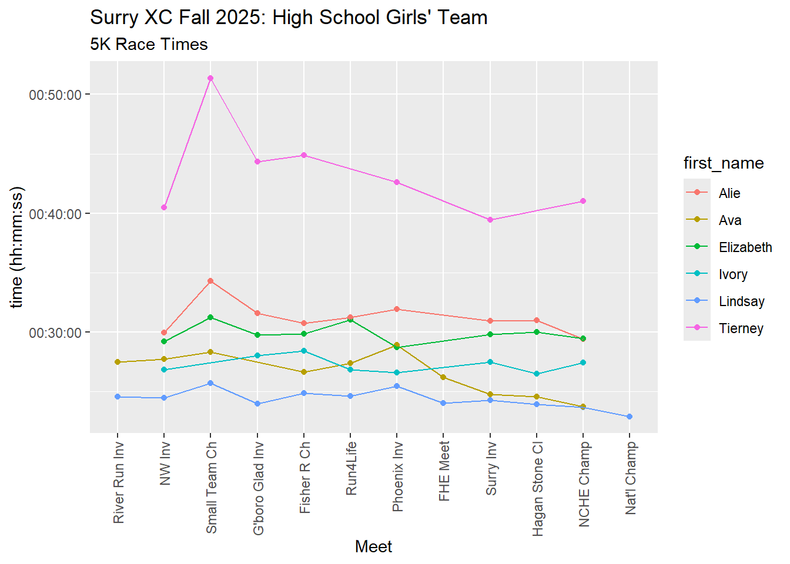
Table of Individual Minimum, Average, and Maximum 5K Times by Runner
race_data |>
filter(division == "High School" & sex == "Girls" & distance == "5K") |>
group_by(first_name) |>
summarize("Fastest_Time" = SecToHms(min(time_h_mm_ss)), "Average_Time" = SecToHms(mean(time_h_mm_ss)),
"Slowest_Time" = SecToHms(max(time_h_mm_ss))) |>
arrange(Average_Time)| first_name | Fastest_Time | Average_Time | Slowest_Time |
|---|---|---|---|
| Lindsay | 00:22:54 | 00:24:21.92 | 00:25:41 |
| Ava | 00:23:43 | 00:26:34.60 | 00:28:55 |
| Ivory | 00:26:29 | 00:27:15.38 | 00:28:25 |
| Elizabeth | 00:28:42 | 00:29:53.89 | 00:31:15 |
| Alie | 00:29:23 | 00:31:14 | 00:34:19 |
| Tierney | 00:39:27 | 00:43:26.43 | 00:51:21 |
Boxplot of 5K Race Times by Runner
race_data |>
filter(division == "High School" & sex == "Girls" & distance == "5K") |>
mutate(first_name = factor(first_name, levels = c("Lindsay", "Ava", "Ivory", "Elizabeth", "Alie", "Tierney"))) |>
group_by(first_name) |>
ggplot(aes(x = first_name, y = time_h_mm_ss, fill = first_name)) +
geom_boxplot() +
labs(title = "Surry XC 2025: High School Girls' Team",
subtitle = "5K Races: Boxplot of Season Times by Runner",
x = "Runner", y = "time (hh:mm:ss)") +
stat_summary(fun = "mean", geom = "point", shape = 23, size = 3, fill = "white")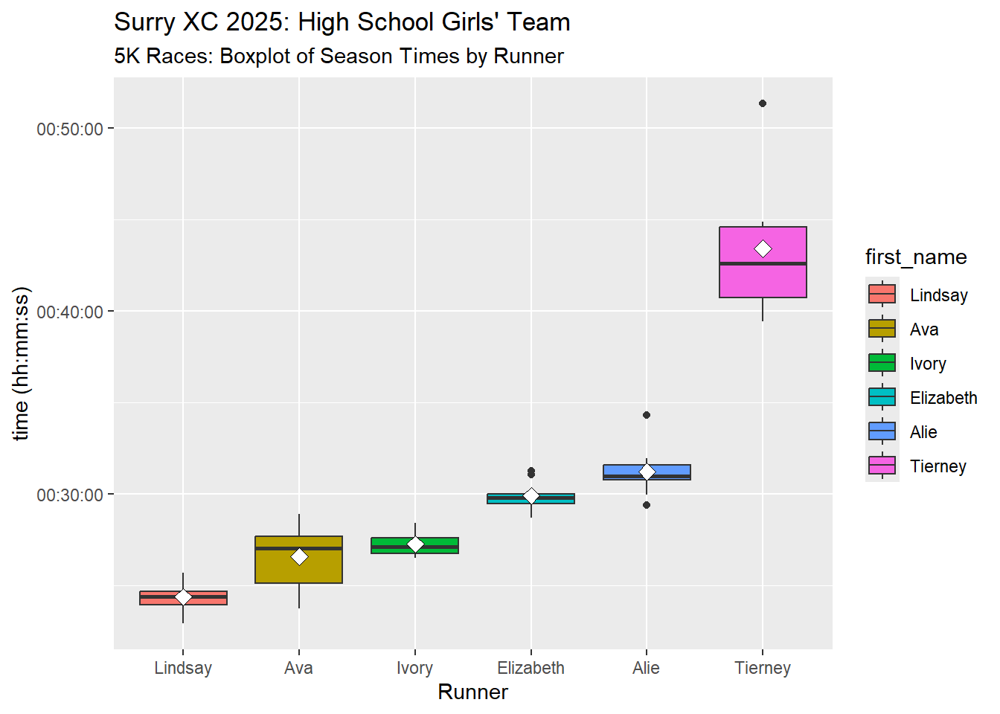
Scoring Analysis: Table of Top Five (Scored) Times for Each Race
race_data |>
filter(sex == "Girls" & distance == "5K") |>
filter(short_race_name != "River Run Inv" & short_race_name != "FHE Meet" & short_race_name != "Nat'l Champ") |> #remove races that didn't have five 5K runners
mutate(sorter = HmsToSec(time_h_mm_ss)) |>
group_by(short_race_name) |>
arrange(sorter, .by_group = TRUE) |>
slice_head(n=5) |>
mutate(position_in_group = row_number()) |>
select(position_in_group, short_race_name, time_h_mm_ss) |>
pivot_wider(names_from = position_in_group, values_from = time_h_mm_ss) |>
rowwise() |>
mutate(top5_average = SecToHms(mean(c(`1`, `2`, `3`, `4`, `5`)))) |>
ungroup()| short_race_name | 1 | 2 | 3 | 4 | 5 | top5_average |
|---|---|---|---|---|---|---|
| NW Inv | 00:24:29 | 00:26:50 | 00:27:44 | 00:29:14 | 00:29:58 | 00:27:39 |
| Small Team Ch | 00:25:41 | 00:28:19 | 00:31:15 | 00:34:19 | 00:51:21 | 00:34:11 |
| G’boro Glad Inv | 00:23:58 | 00:28:01 | 00:29:44 | 00:31:36 | 00:44:19 | 00:31:31.60 |
| Fisher R Ch | 00:24:52 | 00:26:38 | 00:28:25 | 00:29:52 | 00:30:46 | 00:28:06.60 |
| Run4Life | 00:24:37 | 00:26:49 | 00:27:24 | 00:31:03 | 00:31:14 | 00:28:13.40 |
| Phoenix Inv | 00:25:26 | 00:26:36 | 00:28:42 | 00:28:55 | 00:31:56 | 00:28:19 |
| Surry Inv | 00:24:17 | 00:24:45 | 00:27:28 | 00:29:48 | 00:30:55 | 00:27:26.60 |
| Hagan Stone Cl | 00:23:54 | 00:24:35 | 00:26:29 | 00:29:59 | 00:30:59 | 00:27:11.20 |
| NCHE Champ | 00:23:40 | 00:23:43 | 00:27:25 | 00:29:23 | 00:29:28 | 00:26:43.80 |
This team only had six runners, so if two or more were absent or the runners were divided between different races in the same meet there was not a team score. The NCHE Meet (state championship) was the best scoring time average of the year.
Scoring Analysis: Bar Chart of Sum of Top 5 Times for Each Race
race_data |>
filter(sex == "Girls" & distance == "5K") |>
filter(short_race_name != "River Run Inv" & short_race_name != "FHE Meet" & short_race_name != "Nat'l Champ") |> #remove races that didn't have five 5K runners
mutate(sorter = HmsToSec(time_h_mm_ss)) |>
group_by(short_race_name) |>
arrange(sorter, .by_group = TRUE) |>
slice_head(n=5) |>
mutate(position_in_group = row_number()) |>
ggplot(aes(x = short_race_name, y = time_h_mm_ss, fill = position_in_group)) +
geom_bar(stat = "identity") +
theme(axis.text.x = element_text(angle = 90, vjust = 0.5, hjust = 1)) +
labs(title = "Surry XC Fall 2025: High School Girls",
subtitle = "Scoring Analysis",
y = "Sum of Top Five Team Race Times (hh:mm:ss)",
x = "Meet")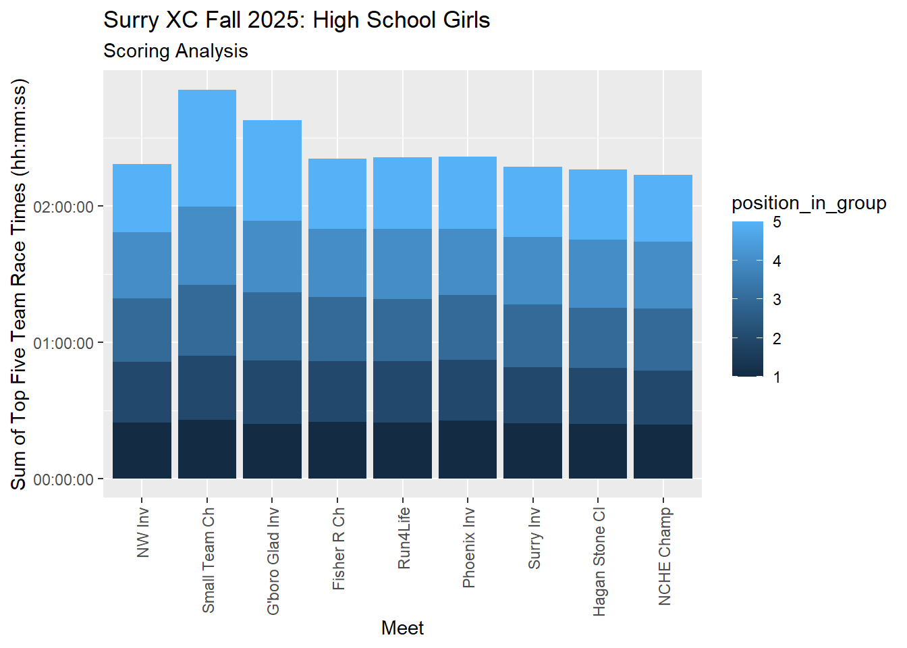
NW Inv (first scored race) and final three races were the lowest time score sum races.
Season Highlights: Fastest 5K Times
race_data |>
filter(sex == "Girls" & distance == "5K") |>
arrange(time_h_mm_ss) |>
select(first_name, time_h_mm_ss, short_race_name) |>
head(10)| first_name | time_h_mm_ss | short_race_name |
|---|---|---|
| Lindsay | 00:22:54 | Nat’l Champ |
| Lindsay | 00:23:40 | NCHE Champ |
| Ava | 00:23:43 | NCHE Champ |
| Lindsay | 00:23:54 | Hagan Stone Cl |
| Lindsay | 00:23:58 | G’boro Glad Inv |
| Lindsay | 00:24:02 | FHE Meet |
| Lindsay | 00:24:17 | Surry Inv |
| Lindsay | 00:24:29 | NW Inv |
| Lindsay | 00:24:33 | River Run Inv |
| Ava | 00:24:35 | Hagan Stone Cl |
Season Highlights: Individual Race Finishes in the Top Ten All race lengths included.
race_data |>
filter(sex == "Girls" & division == "High School" & place <= 10) |>
arrange(place) |>
select(first_name, place, short_race_name)| first_name | place | short_race_name |
|---|---|---|
| Lindsay | 1 | Bob Schilly Inv |
| Lindsay | 1 | Surry Inv |
| Lindsay | 2 | Small Team Ch |
| Ava | 2 | Surry Inv |
| Ava | 4 | Bob Schilly Inv |
| Ava | 4 | Small Team Ch |
| Lindsay | 5 | Fisher R Ch |
| Ivory | 5 | Surry Inv |
| Lindsay | 7 | Phoenix Inv |
| Elizabeth | 9 | Small Team Ch |
| Ivory | 10 | Bob Schilly Inv |
| Lindsay | 10 | Run4Life |
Season Highlights: Strong Finishers Runners who ran a PR in the final race(s) of the season (NCHE or HXN Championships).
race_data |>
filter(sex == "Girls" & division == "High School" & distance == "5K") |>
group_by(first_name) |>
arrange(time_h_mm_ss) |>
slice(1) |>
select(first_name, time_h_mm_ss, short_race_name) |>
filter(short_race_name == "Nat'l Champ" | short_race_name == "NCHE Champ") |>
arrange(time_h_mm_ss)| first_name | time_h_mm_ss | short_race_name |
|---|---|---|
| Lindsay | 00:22:54 | Nat’l Champ |
| Ava | 00:23:43 | NCHE Champ |
| Alie | 00:29:23 | NCHE Champ |
Perfect Race Attendance: Runners Who Ran in All Races Not all runners had the option to race in the national championships.
race_data |>
filter(sex == "Girls" & division == "High School") |>
group_by(first_name) |>
count() |>
filter(n >= 12)| first_name | n |
|---|---|
| Lindsay | 13 |
Middle School Boys
There was only one middle school boy running with Surry in 2025.
Table of Individual 2-Mile Race Times: Two miles is the standard race length for middle school cross country runners, and that race length is the focus of this analysis.
race_data |>
filter(division == "Middle School" & sex == "Boys" & distance == "2mi") |>
select(first_name, short_race_name, time_h_mm_ss) |>
pivot_wider(names_from = short_race_name, values_from = time_h_mm_ss)| first_name | River Run Inv | NW Inv | G’boro Glad Inv | Fisher R Ch | FHE Meet | NCHE Champ |
|---|---|---|---|---|---|---|
| Milo | 00:13:44 | 00:14:31 | 00:13:45 | 00:13:45 | 00:14:01 | 00:13:45 |
Graph of Individual 2-Mile Race Times
ggplot(filter(race_data, division == "Middle School" &
distance == "2mi" &
sex == "Boys"),
aes(x = short_race_name, y = time_h_mm_ss, group = first_name, color = first_name)) +
geom_point() +
geom_line() +
labs(y = "time (hh:mm:ss)",
x = "Meet",
title = "Surry XC Fall 2025: Middle School Boys' Team",
subtitle = "2-Mile Race Times") +
theme(axis.text.x = element_text(angle = 90, vjust = 0.5, hjust = 1))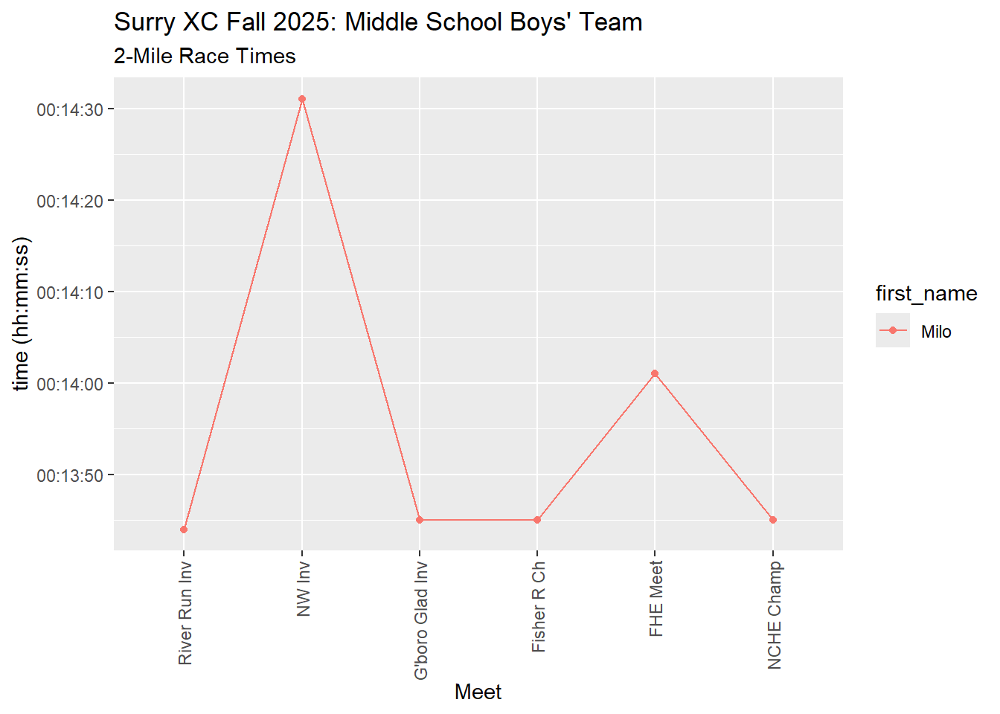
Table of Individual Minimum, Average, and Maximum 2-Mile Times by Runner
race_data |>
filter(division == "Middle School" & sex == "Boys" & distance == "2mi") |>
group_by(first_name) |>
summarize("Fastest_Time" = SecToHms(min(time_h_mm_ss)), "Average_Time" = SecToHms(mean(time_h_mm_ss)),
"Slowest_Time" = SecToHms(max(time_h_mm_ss))) |>
arrange(Average_Time)| first_name | Fastest_Time | Average_Time | Slowest_Time |
|---|---|---|---|
| Milo | 00:13:44 | 00:13:55.17 | 00:14:31 |
Boxplot of 2-Mile Race Times by Runner
race_data |>
filter(division == "Middle School" & sex == "Boys" & distance == "2mi") |>
mutate(first_name = factor(first_name, levels = c("Milo"))) |>
group_by(first_name) |>
ggplot(aes(x = first_name, y = time_h_mm_ss, fill = first_name)) +
geom_boxplot() +
labs(title = "Surry XC 2025: Middle School Boys' Team",
subtitle = "2-Mile Races: Boxplot of Season Times by Runner",
x = "Runner", y = "time (hh:mm:ss)") +
stat_summary(fun = "mean", geom = "point", shape = 23, size = 3, fill = "white")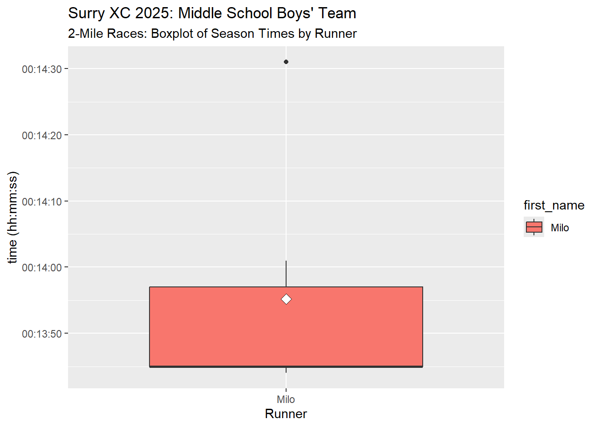
Season Highlights: Fastest 2-Mile Times
race_data |>
filter(sex == "Boys" & distance == "2mi") |>
arrange(time_h_mm_ss) |>
select(first_name, time_h_mm_ss, short_race_name) |>
head(6)| first_name | time_h_mm_ss | short_race_name |
|---|---|---|
| Milo | 00:13:44 | River Run Inv |
| Milo | 00:13:45 | G’boro Glad Inv |
| Milo | 00:13:45 | Fisher R Ch |
| Milo | 00:13:45 | NCHE Champ |
| Milo | 00:14:01 | FHE Meet |
| Milo | 00:14:31 | NW Inv |
Season Highlights: Individual Race Finishes in the Top Ten All race lengths included.
race_data |>
filter(sex == "Boys" & division == "Middle School" & place <= 10) |>
arrange(place) |>
select(first_name, place, short_race_name)| first_name | place | short_race_name |
|---|---|---|
| Milo | 4 | Small Team Ch |
| Milo | 10 | Bob Schilly Inv |
Middle School Girls
Table of Individual 2-Mile Race Times: The standard race length for middle school cross country runners is 2 miles, and that race length is the focus of this analysis.
race_data |>
filter(division == "Middle School" & sex == "Girls" & distance == "2mi") |>
select(first_name, short_race_name, time_h_mm_ss) |>
pivot_wider(names_from = short_race_name, values_from = time_h_mm_ss)| first_name | River Run Inv | NW Inv | G’boro Glad Inv | Fisher R Ch | Run4Life | Phoenix Inv | FHE Meet | Surry Inv | NCHE Champ |
|---|---|---|---|---|---|---|---|---|---|
| Caroline | 00:16:37 | 00:16:40 | 00:16:59 | 00:16:48 | 00:17:49 | 00:17:15 | 00:17:18 | 00:16:11 | 00:16:51 |
| Jada | 00:19:32 | 00:22:46 | 00:21:52 | 00:19:40 | 00:20:48 | 00:22:26 | 00:20:46 | 00:19:23 | 00:20:24 |
| Lily | 00:20:02 | 00:21:26 | NA | 00:21:34 | NA | 00:20:02 | 00:20:55 | 00:18:49 | 00:18:26 |
| Adah | 00:20:05 | 00:23:53 | NA | NA | 00:25:04 | 00:21:36 | 00:23:25 | 00:18:41 | 00:19:11 |
| Madelynn | 00:20:21 | 00:21:17 | 00:21:53 | 00:20:48 | 00:22:47 | 00:20:42 | 00:21:20 | 00:19:41 | 00:20:23 |
| Abigail | 00:20:42 | 00:21:16 | 00:24:56 | 00:22:42 | 00:22:44 | 00:22:22 | 00:22:04 | 00:21:10 | 00:20:05 |
Graph of Individual 2-Mile Race Times
ggplot(filter(race_data, division == "Middle School" &
distance == "2mi" &
sex == "Girls"),
aes(x = short_race_name, y = time_h_mm_ss, group = first_name, color = first_name)) +
geom_point() +
geom_line() +
labs(y = "time (hh:mm:ss)",
x = "Meet",
title = "Surry XC Fall 2025: Middle School Girls' Team",
subtitle = "2-Mile Race Times") +
theme(axis.text.x = element_text(angle = 90, vjust = 0.5, hjust = 1))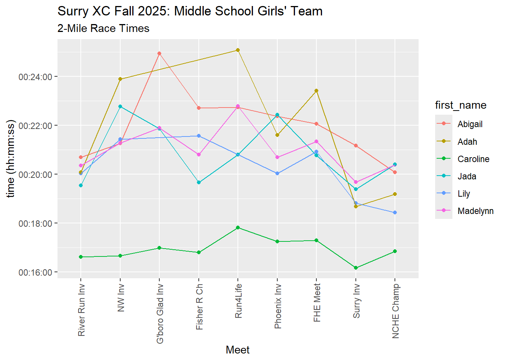
Table of Individual Minimum, Average, and Maximum 2-Mile Times by Runner
race_data |>
filter(division == "Middle School" & sex == "Girls" & distance == "2mi") |>
group_by(first_name) |>
summarize("Fastest_Time" = SecToHms(min(time_h_mm_ss)), "Average_Time" = SecToHms(mean(time_h_mm_ss)),
"Slowest_Time" = SecToHms(max(time_h_mm_ss))) |>
arrange(Average_Time)| first_name | Fastest_Time | Average_Time | Slowest_Time |
|---|---|---|---|
| Caroline | 00:16:11 | 00:16:56.44 | 00:17:49 |
| Lily | 00:18:26 | 00:20:10.57 | 00:21:34 |
| Jada | 00:19:23 | 00:20:50.78 | 00:22:46 |
| Madelynn | 00:19:41 | 00:21:01.33 | 00:22:47 |
| Adah | 00:18:41 | 00:21:42.14 | 00:25:04 |
| Abigail | 00:20:05 | 00:22:00.11 | 00:24:56 |
Boxplot of 2-Mile Race Times by Runner
race_data |>
filter(division == "Middle School" & sex == "Girls" & distance == "2mi") |>
mutate(first_name = factor(first_name, levels = c("Caroline", "Lily", "Jada", "Madelynn", "Adah", "Abigail"))) |>
group_by(first_name) |>
ggplot(aes(x = first_name, y = time_h_mm_ss, fill = first_name)) +
geom_boxplot() +
labs(title = "Surry XC 2025: Middle School Girls' Team",
subtitle = "2-Mile Races: Boxplot of Season Times by Runner",
x = "Runner", y = "time (hh:mm:ss)") +
stat_summary(fun = "mean", geom = "point", shape = 23, size = 3, fill = "white")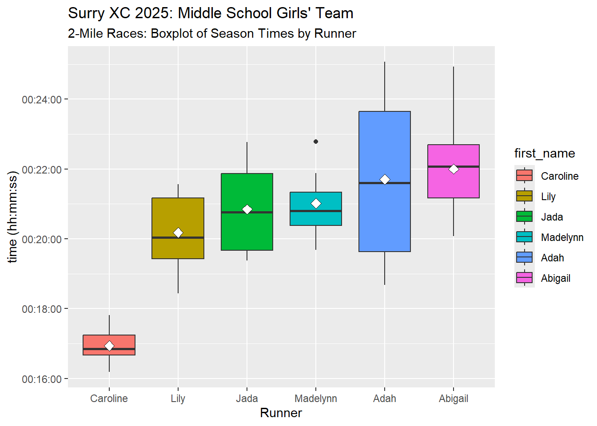
Scoring Analysis: Chart of Top Five (Scored) Times for Each Race The team score in a cross country race is determined by the placement of the fastest five runners on each time. Their placements are totaled, and the team with the lowest score wins.
race_data |>
filter(sex == "Girls" & division == "Middle School" & distance == "2mi") |>
filter(short_race_name != "G'boro Glad Inv") |> #remove race that didn't have five runners
mutate(sorter = HmsToSec(time_h_mm_ss)) |>
group_by(short_race_name) |>
arrange(sorter, .by_group = TRUE) |>
slice_head(n=5) |>
mutate(position_in_group = row_number()) |>
select(position_in_group, short_race_name, time_h_mm_ss) |>
pivot_wider(names_from = position_in_group, values_from = time_h_mm_ss) |>
rowwise() |>
mutate(top5_average = SecToHms(mean(c(`1`, `2`, `3`, `4`, `5`)))) |>
ungroup()| short_race_name | 1 | 2 | 3 | 4 | 5 | top5_average |
|---|---|---|---|---|---|---|
| River Run Inv | 00:16:37 | 00:19:32 | 00:20:02 | 00:20:05 | 00:20:21 | 00:19:19.40 |
| NW Inv | 00:16:40 | 00:21:16 | 00:21:17 | 00:21:26 | 00:22:46 | 00:20:41 |
| Fisher R Ch | 00:16:48 | 00:19:40 | 00:20:48 | 00:21:34 | 00:22:42 | 00:20:18.40 |
| Run4Life | 00:17:49 | 00:20:48 | 00:22:44 | 00:22:47 | 00:25:04 | 00:21:50.40 |
| Phoenix Inv | 00:17:15 | 00:20:02 | 00:20:42 | 00:21:36 | 00:22:22 | 00:20:23.40 |
| FHE Meet | 00:17:18 | 00:20:46 | 00:20:55 | 00:21:20 | 00:22:04 | 00:20:28.60 |
| Surry Inv | 00:16:11 | 00:18:41 | 00:18:49 | 00:19:23 | 00:19:41 | 00:18:33 |
| NCHE Champ | 00:16:51 | 00:18:26 | 00:19:11 | 00:20:05 | 00:20:23 | 00:18:59.20 |
Scoring Analysis: Bar Chart of Sum of Top 5 Times for Each Race
race_data |>
filter(sex == "Girls" & division == "Middle School" & distance == "2mi") |>
filter(short_race_name != "G'boro Glad Inv") |> #remove race that didn't have five runners
mutate(sorter = HmsToSec(time_h_mm_ss)) |>
group_by(short_race_name) |>
arrange(sorter, .by_group = TRUE) |>
slice_head(n=5) |>
mutate(position_in_group = row_number()) |>
ggplot(aes(x = short_race_name, y = time_h_mm_ss, fill = position_in_group)) +
geom_bar(stat = "identity") +
theme(axis.text.x = element_text(angle = 90, vjust = 0.5, hjust = 1)) +
labs(title = "Surry XC Fall 2025: Middle School Girls",
subtitle = "Scoring Analysis",
y = "Sum of Top Five Team Race Times (hh:mm:ss)",
x = "Meet")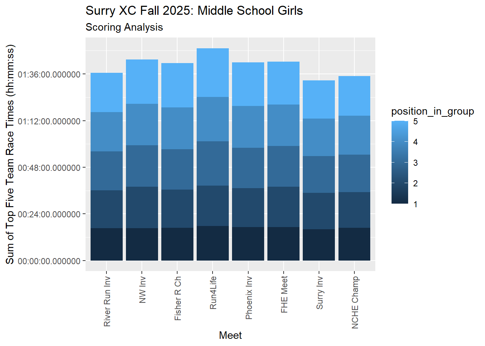
Season Highlights: Fastest 2-Mile Times
race_data |>
filter(sex == "Girls" & distance == "2mi" & division == "Middle School") |>
arrange(time_h_mm_ss) |>
select(first_name, time_h_mm_ss, short_race_name) |>
head(10)| first_name | time_h_mm_ss | short_race_name |
|---|---|---|
| Caroline | 00:16:11 | Surry Inv |
| Caroline | 00:16:37 | River Run Inv |
| Caroline | 00:16:40 | NW Inv |
| Caroline | 00:16:48 | Fisher R Ch |
| Caroline | 00:16:51 | NCHE Champ |
| Caroline | 00:16:59 | G’boro Glad Inv |
| Caroline | 00:17:15 | Phoenix Inv |
| Caroline | 00:17:18 | FHE Meet |
| Caroline | 00:17:49 | Run4Life |
| Lily | 00:18:26 | NCHE Champ |
Season Highlights: Individual Race Finishes in the Top Ten
race_data |>
filter(sex == "Girls" & division == "Middle School" & place <= 10) |>
arrange(place) |>
select(first_name, place, short_race_name)| first_name | place | short_race_name |
|---|---|---|
| Caroline | 8 | Small Team Ch |
Season Highlights: Strong Finishers Runners who ran a PR in the final race of the season (NCHE Championships)
race_data |>
filter(sex == "Girls" & division == "Middle School" & distance == "2mi") |>
group_by(first_name) |>
arrange(time_h_mm_ss) |>
slice(1) |>
select(first_name, time_h_mm_ss, short_race_name) |>
filter(short_race_name == "NCHE Champ") |>
arrange(time_h_mm_ss)| first_name | time_h_mm_ss | short_race_name |
|---|---|---|
| Lily | 00:18:26 | NCHE Champ |
| Abigail | 00:20:05 | NCHE Champ |
Season Highlights: Perfect Race Attendance Runners Who Ran in All Races
race_data |>
filter(sex == "Girls" & division == "Middle School") |>
group_by(first_name) |>
count() |>
filter(n >= 12)| first_name | n |
|---|---|
| Abigail | 12 |
| Caroline | 12 |
| Jada | 12 |